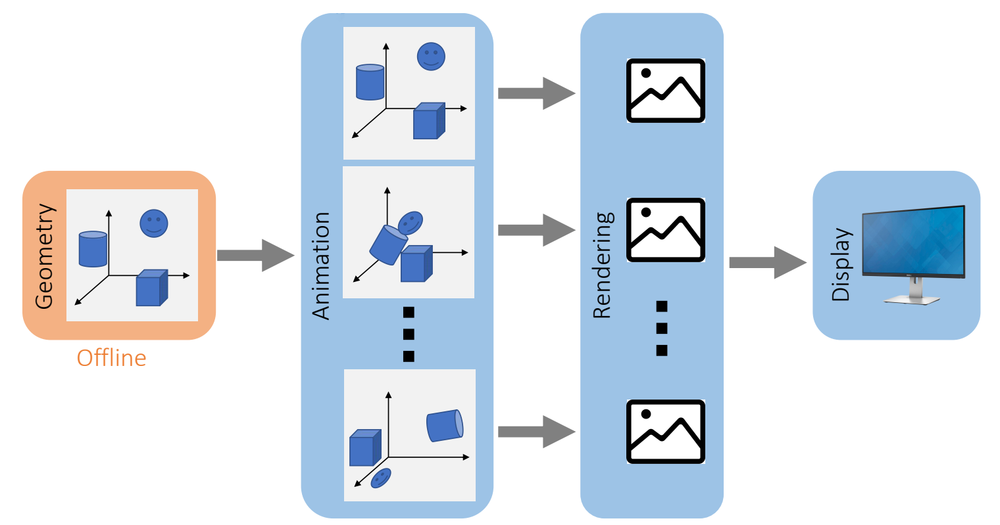
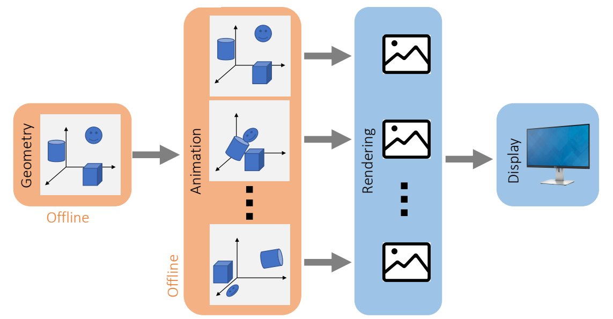
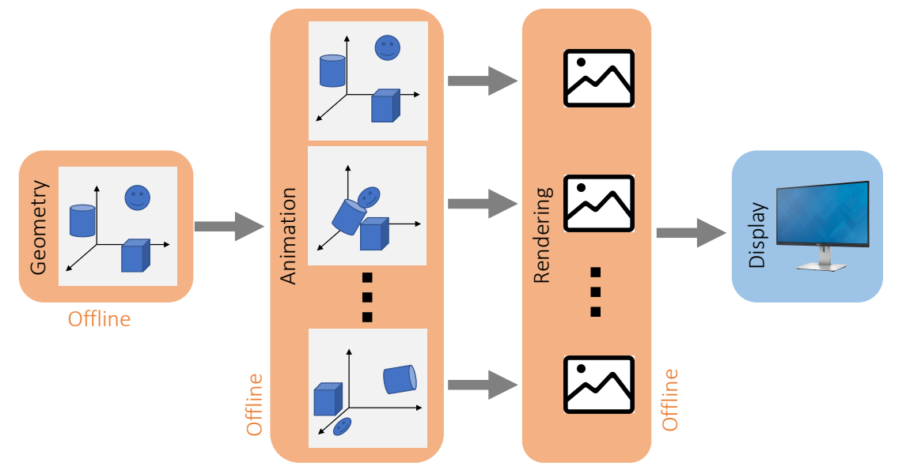

Graphics Pipeline
数学基础
Animation - 角色动画
Animation - 物理动画
Geometry
Rendering
Real-Time Graphics Pipeline

P15
The number of frames sent to display in a second is called the frame rate.
For example, 24 FPS, 30 FPS, 60 FPS, …
✅ 帧率要求主要取决于交互性，因此游戏要求比电影高。
P17
Animation Playback

✅ 由于实时比较难，可以把不需要交互的动画，例如过场动画做成离线
✅ 同理，不需要交互的场景。
P18
Movie
✅ Geometry: 离线：构造离线的3D也界
✅ 动画：渲染，实时，需要与3D世界或玩家互动
✅ 电影：离线，不需要交互，提前录下来，例如游戏中的过场动画

本文出自CaterpillarStudyGroup，转载请注明出处。
https://caterpillarstudygroup.github.io/GAMES103_mdbook/